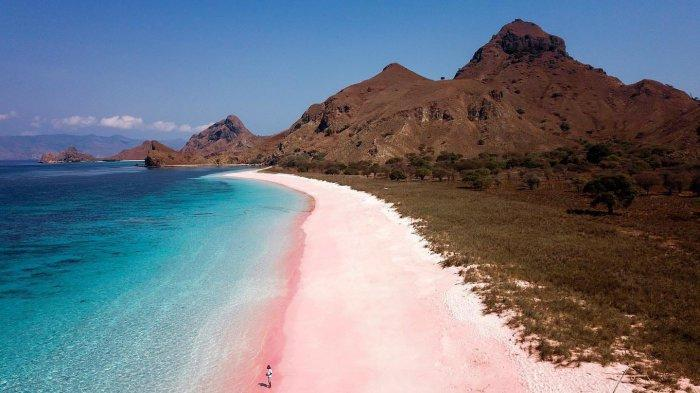
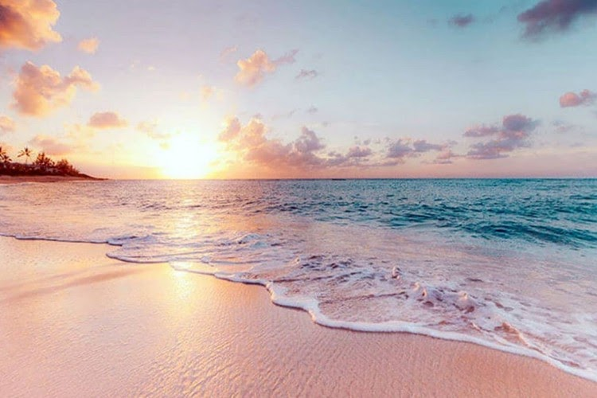
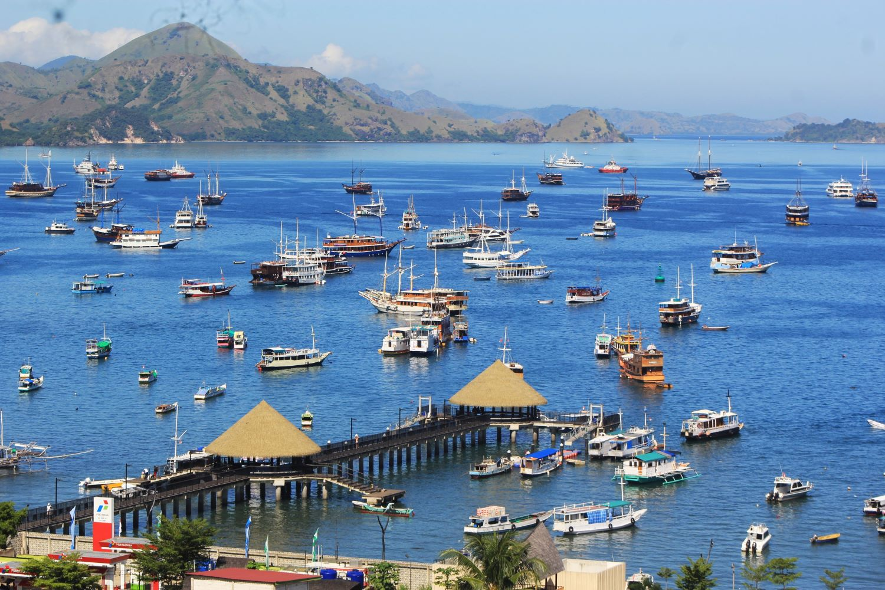
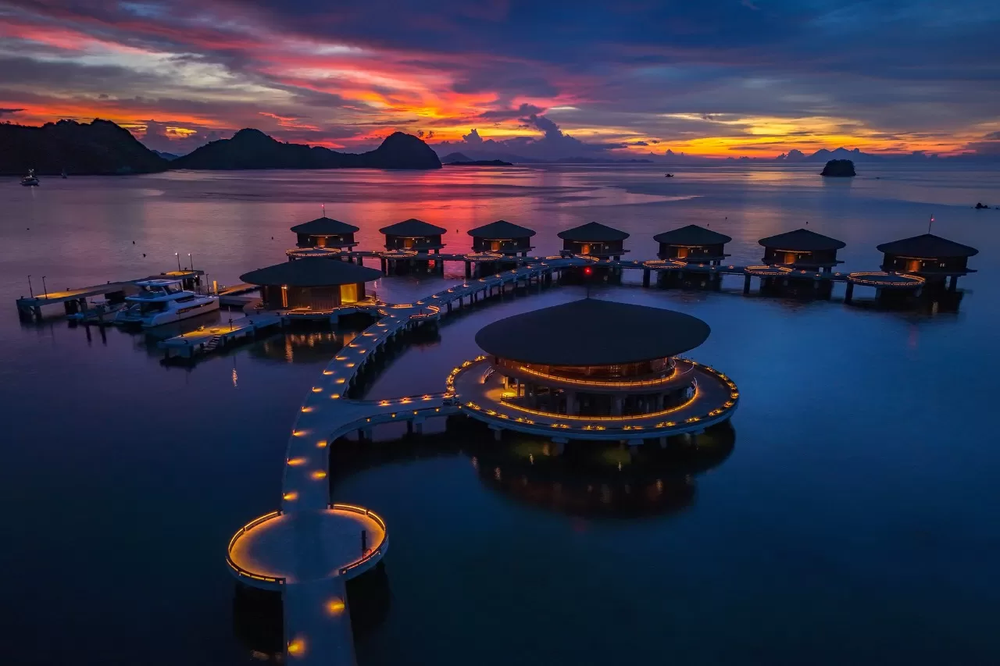
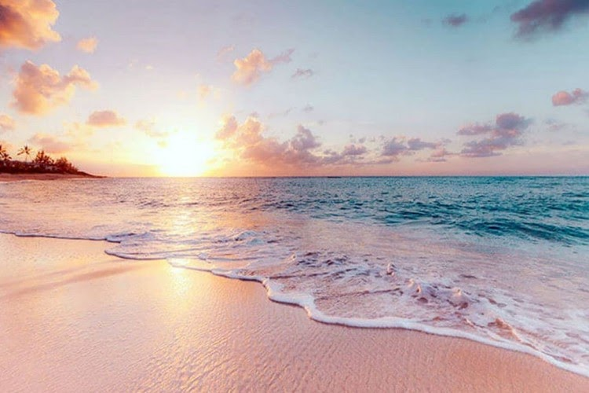
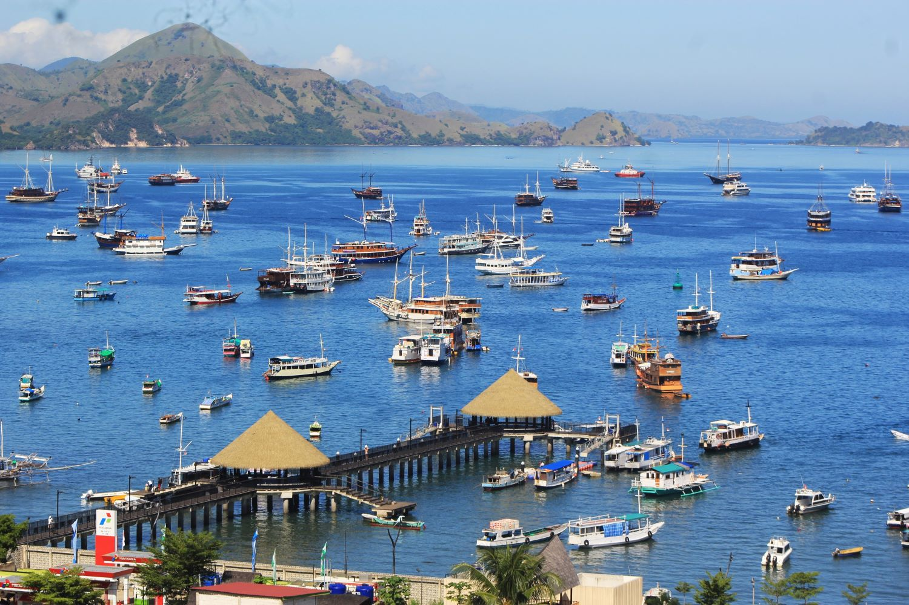
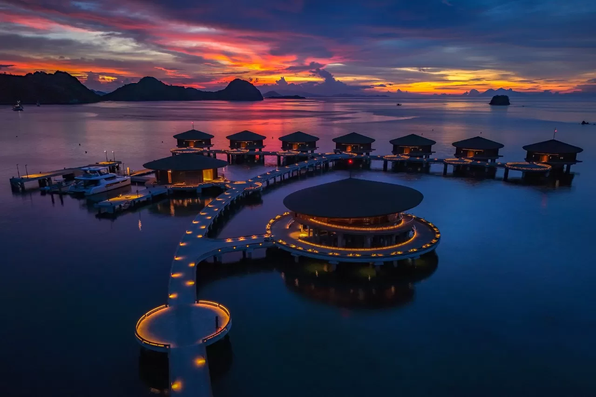

Pink Beach - Labuan Bajo
Pink Beach, also known as Pantai Merah, is renowned for its unique pink-hued sand, a phenomenon caused by the presence of microscopic coral organisms known as foraminifera. This stunning natural wonder, combined with crystal-clear turquoise waters and vibrant marine life, creates an idyllic setting for beach lovers and snorkeling enthusiasts alike.
Gallery
Here are some pictures and videos from Pink Beach Labuan Bajo.
 





Back Check Prices
Location
Bali is an island province located in the westernmost part of Indonesia. Situated between Java to the west and Lombok to the east, Bali is known for its stunning beaches, lush landscapes, vibrant culture, and rich heritage.